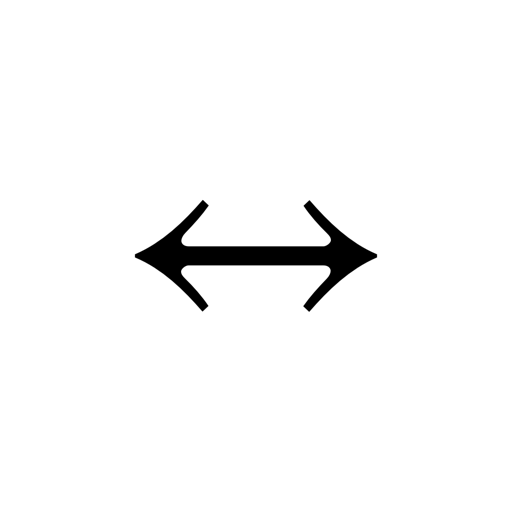
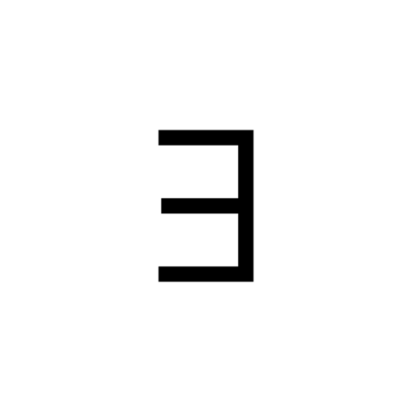

| Operation | Result | LaTeX code |
|---|---|---|
| Conjunction (logical AND) | |
\land |
| Disjunction (logical OR) | |
\lor |
| Negation (NOT) | |
\neg |
| Implication | |
\rightarrow |
| Biconditional Operator |  | \leftrightarrow |
| For All | |
\forall |
| Exists |  | \exists |
| Therefore | |
\therefore |
| a AND b | |
a \land b |
| a OR b | |
a \lor b |
| NOT a | |
\neg a |
| a implies b | a \rightarrow b | |
| a if and only if b | a \leftrightarrow b |